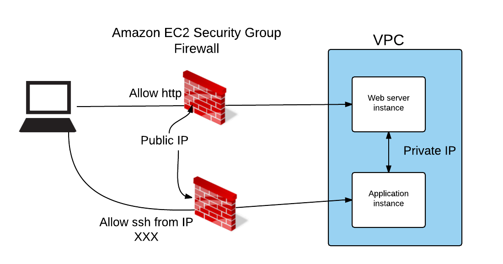

The Cloud
Mattias Holmlund, 2015-08-27
Use cases
- Launch a (web) service without owning any servers
- Start small and scale indefinitely
- Rent compute / storage capacity to handle peaks
- Test in a clean environment.
No hardware!
Several different providers
- Amazon
- Azure
- Digital Ocean
- City Network Karlstad
- ...
Amazon
- 9 regions across the globe
- 28 availability zones
- at least one datacenter per availability zone
- 50k - 80k servers per datacenter
- 2-5 million servers
Amazon
- build their own servers
- private network with their own fiber links
- build their own networking gear
AWS

Amazon EC2
Rent virtual servers
- From 1 vCPU / 1 GB RAM
- To 36 vCPU / 244 GB RAM
- Pay per hour
- Spin up a new server in "a few minutes"
- Stop it when you´re done
Demo
Create ec2 instance via web
Networking in EC2
- VPC - Virtual Private Cloud
- All instances belong to a VPC
- No firewall between instances in a VPC
- Private IP inside VPC
- Public IP forwarded to private IP via firewall
Networking in EC2
Demo
Create ec2 instance via cli
run-instance
inst_id=$(aws ec2 run-instances \
--image-id ami-accff2b1 \
--count 1 --instance-type t2.micro \
--key-name netinsight \
--security-groups launch-wizard-1 \
--query Instances[0].InstanceId \
--output text)
aws ec2 wait instance-status-ok \
--instance-ids $inst_id
run-instance
ip=$(aws ec2 describe-instances \
--instance-ids $inst_id \
--query \
'Reservations[0].Instances[0].PublicIpAddress' \
--output text)
scp -o StrictHostKeyChecking=no \
./installer ubuntu@$ip:
ssh -o StrictHostKeyChecking=no ubuntu@$ip \
sudo ./installer
run-instance
aws ec2 terminate-instances \
--instance-ids $inst_id \
--output text
installer
apt-get update
apt-get install -y apache2
echo "Behold the power of the Cloud" \
> /var/www/html/index.html
This script runs on the EC2 instance.
Clean environment every time!
Pricing
| Type | vCPU | Mem | 1h | 1month |
|---|---|---|---|---|
| t2.micro | 1 | 1 GB | 0.12 | 106 |
| m4.large | 2 | 8 GB | 1.20 | 1060 |
Prices in SEK. 750 hours of free t2.micro when you sign up
Storage
EBS - Elastic Block Store
- Exposed as a block device in linux
- Use any filesystem
- Use mdadm to raid them
- Lifetime separate from containers
- Can only be mounted on one instance at a time
- Used for root disk by default
S3 - Simple Storage Service
- Object storage (files)
- Store files up to 5TB in size
- Accessible via http
- Can control access
- Can host websites
- Used as storage for many public services
(Dropbox, Smugmug)
S3 Cost
- 85 GB storage for a month, SEK 28
- Charges for transfer as well
- Prices go down
- Stored 2*1012 objects in 2013
S3 Demo
Questions?
Try it!
- First 750 hours of t2.micro for free
- Protect your credentials!
- Don't forget to terminate instances